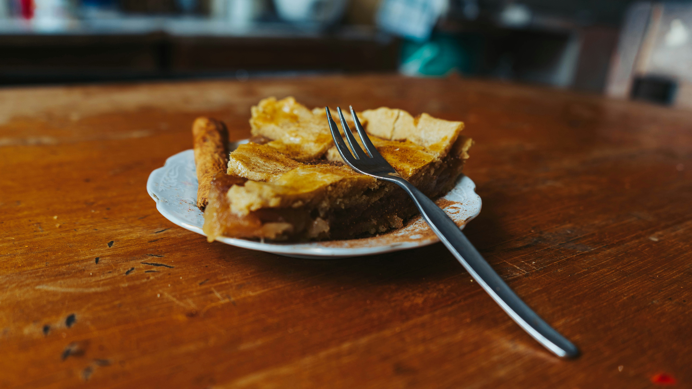

Scotch Pie: La Empanada de los Estadios
Historia
El Scotch Pie es un clásico indiscutible de la comida escocesa, con una historia que se remonta cientos de años. Aunque sus orígenes exactos son inciertos, se cree que la versión que conocemos hoy, con su característica masa de agua caliente y relleno de carne picada, desciende de la "penny mutton pie" (empanada de cordero de un penique) que era popular a finales del siglo XVIII y principios del XIX.
En diciembre de 1937, la célebre folclorista escocesa Florence Marian McNeill escribió en The Scotsman que se trataba de "nuestra empanada escocesa más distintiva, la pequeña empanada de cordero". En el mismo artículo, recuerda las memorias del diputado James Stuart, quien evocaba con nostalgia las empanadas de una tal Sra. Gillespie, la "pastelera" de su época escolar en St. Andrews. Stuart describía su obra maestra como una empanada de cordero con una corteza firme que contenía un delicioso jugo, sin grasa, que llegaba siempre humeante y que aún hoy le hacía la boca agua. Incluso el célebre escritor inglés Samuel Johnson, conocido por no prodigar elogios a nada escocés, alabó esta empanada.
Aunque Glasgow a menudo reclama ser el "verdadero hogar" del Scotch Pie (tanto es así que una especialidad local es la "ostra de Glasgow", que consiste en un Scotch pie dentro de un panecillo), lo cierto es que pastelerías tradicionales llevaban siglos elaborándolas, con menciones a estas "penny mutton pies" en tiendas desde Brechin hasta John O'Groats a finales del siglo XVIII.
Ingredientes y diseño
La definición de un auténtico Scotch Pie está incluso recogida en la leyenda. La normativa británica Meat Pie and Sausage Roll Regulations de 1967 lo describe como una empanada de carne compuesta por una carcasa cilíndrica de masa, de no más de 5 pulgadas de diámetro, que contiene carne picada de ternera o cordero (o una mezcla), cereal, agua, sal y condimentos, y que no contiene gelatina.
El relleno tradicional es de cordero picado, muy especiado con pimienta negra y otros condimentos, aunque hoy en día es común encontrar versiones de ternera. Lo que hace único al Scotch Pie es su construcción: se hornea en un molde redondo y recto, creando una característica "corteza levantada" o raised crust. El borde de la masa sobresale ligeramente por encima de la tapa superior, creando un pequeño hueco o "pozo". Este espacio no es un defecto, sino un elemento de diseño muy pensado. Está destinado a ser rellenado con acompañamientos como puré de patata (tatties), judías con tomate (baked beans), salsa marrón o gravy. Tradicionalmente, la tapa tiene un pequeño agujero en el centro para que escape el vapor durante la cocción.
Preparación tradicional
La clave del Scotch Pie reside en su masa, conocida como hot water crust pastry (masa de agua caliente). A diferencia de otras masas quebradas o de hojaldre, esta se elabora derritiendo grasa (tradicionalmente sebo de ternera o manteca de cerdo) en agua hirviendo y vertiéndola sobre la harina. El resultado es una masa muy maleable que, al enfriarse, se vuelve firme y crujiente, perfecta para crear la estructura que debe mantener su forma incluso comiéndose con la mano.
La receta que recoge The Scotsman de 1937, atribuida a F. Marian McNeill, es un excelente ejemplo de la tradición. Para seis empanadas, se elabora una masa con harina, sal y 115 gramos de grasa de ternera (o mantequilla) en media pinta de agua hirviendo. Se reserva un tercio de la masa para las tapas, y con el resto se forran seis moldes pequeños. El relleno de cordero magro, sazonado con sal, pimienta y macis (una especia parecida a la nuez moscada), se coloca dentro. Tras colocar la tapa, sellar los bordes y hacer un agujero en el centro, se hornean entre 30 y 40 minutos. Al sacarlas, se rellenan con un poco de caldo caliente antes de servirlas.
Curiosidades
El Scotch pie es un plato tan serio en Escocia que desde 1999 se celebra el Campeonato Mundial del Scotch Pie (World Championship Scotch Pie Awards), organizado por la asociación Scottish Bakers. Cada año, pastelerías y carnicerías de todo el país compiten por el título al mejor pie. En 2024, el ganador fue James Pirie & Son de Blairgowrie. Este certamen es todo un evento en el calendario gastronómico escocés.
Una de las formas más curiosas de consumirlo es la llamada "Glasgow Oyster" (Ostra de Glasgow). No, no lleva marisco. Es simplemente un Scotch Pie servido dentro de un panecillo de morcilla o de harina blanca, creando una especie de bocadillo de empanada que es una institución en la ciudad.
Por último, su relación con el fútbol es mítica. Es el tentempié por excelencia en los campos de fútbol de Escocia, a menudo acompañado de un caldo de carne concentrado llamado Bovril. Por eso, a menudo se le llama también "football pie". La robustez de su masa está diseñada para poder comerlo sin necesidad de cubiertos, de pie, animando a tu equipo.
Galería


